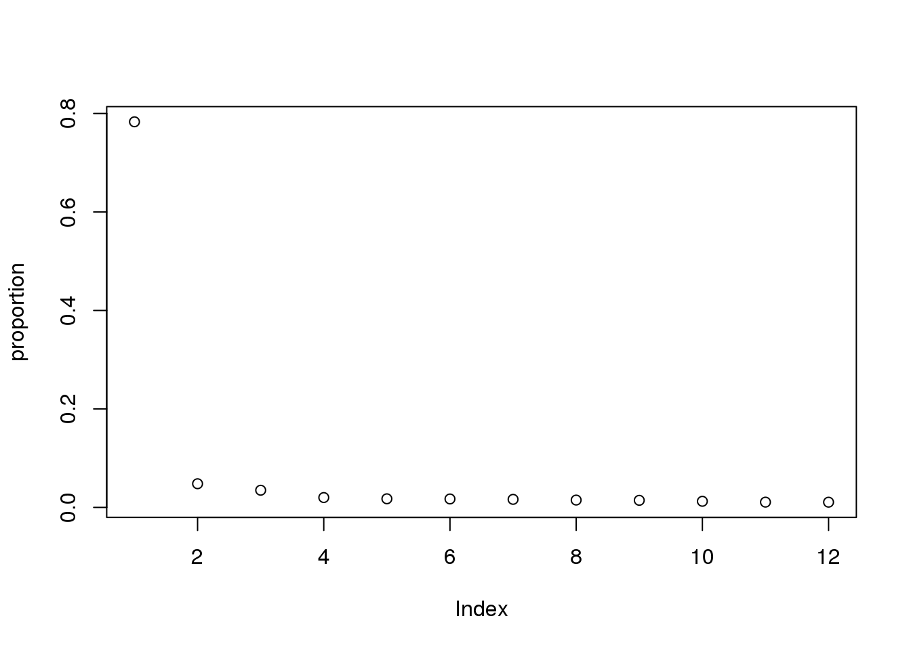
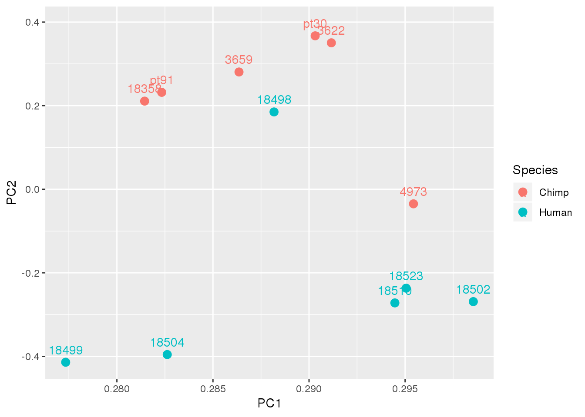
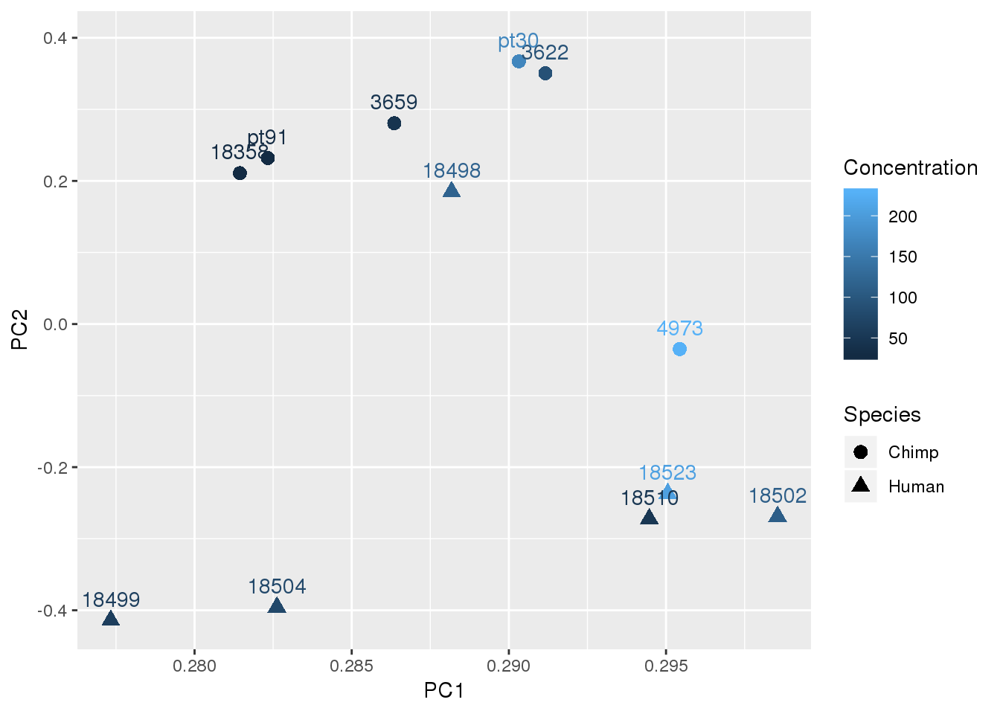
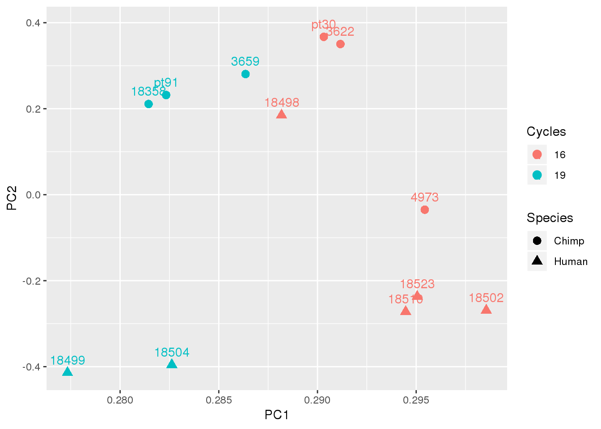
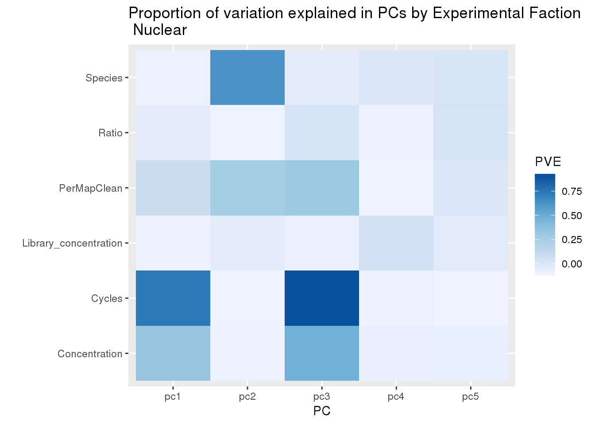
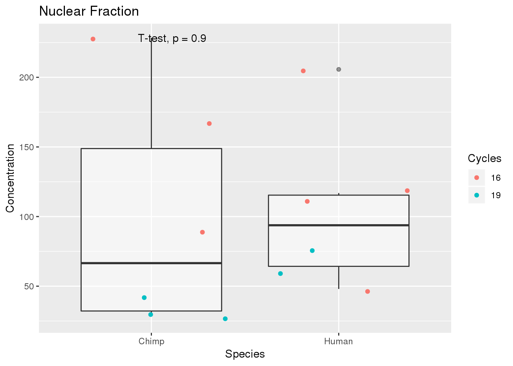

Last updated: 2019-10-10
Checks: 7 0
Knit directory: Comparative_APA/analysis/
This reproducible R Markdown analysis was created with workflowr (version 1.4.0). The Checks tab describes the reproducibility checks that were applied when the results were created. The Past versions tab lists the development history.
Great! Since the R Markdown file has been committed to the Git repository, you know the exact version of the code that produced these results.
Great job! The global environment was empty. Objects defined in the global environment can affect the analysis in your R Markdown file in unknown ways. For reproduciblity it’s best to always run the code in an empty environment.
The command set.seed(20190902) was run prior to running the code in the R Markdown file. Setting a seed ensures that any results that rely on randomness, e.g. subsampling or permutations, are reproducible.
Great job! Recording the operating system, R version, and package versions is critical for reproducibility.
Nice! There were no cached chunks for this analysis, so you can be confident that you successfully produced the results during this run.
Great job! Using relative paths to the files within your workflowr project makes it easier to run your code on other machines.
Great! You are using Git for version control. Tracking code development and connecting the code version to the results is critical for reproducibility. The version displayed above was the version of the Git repository at the time these results were generated.
Note that you need to be careful to ensure that all relevant files for the analysis have been committed to Git prior to generating the results (you can use wflow_publish or wflow_git_commit). workflowr only checks the R Markdown file, but you know if there are other scripts or data files that it depends on. Below is the status of the Git repository when the results were generated:
Ignored files:
Ignored: .DS_Store
Ignored: .Rhistory
Ignored: .Rproj.user/
Ignored: code/chimp_log/
Ignored: code/human_log/
Ignored: data/metadata_HCpanel.txt.sb-a3d92a2d-b9cYoF/
Ignored: data/metadata_HCpanel.txt.sb-f4823d1e-qihGek/
Untracked files:
Untracked: ._.DS_Store
Untracked: Chimp/
Untracked: Human/
Untracked: code/._Config_chimp.yaml
Untracked: code/._Config_human.yaml
Untracked: code/._LiftOrthoPAS2chimp.sh
Untracked: code/._Snakefile
Untracked: code/._SnakefilePAS
Untracked: code/._SnakefilePASfilt
Untracked: code/._bed215upbed.py
Untracked: code/._bed2SAF_gen.py
Untracked: code/._buildStarIndex.sh
Untracked: code/._cleanbed2saf.py
Untracked: code/._cluster.json
Untracked: code/._extraSnakefiltpas
Untracked: code/._filter5percPAS.py
Untracked: code/._filterPASforMP.py
Untracked: code/._filterPostLift.py
Untracked: code/._fixUTRexonanno.py
Untracked: code/._formathg38Anno.py
Untracked: code/._formatpantro6Anno.py
Untracked: code/._intersectLiftedPAS.sh
Untracked: code/._liftPAS19to38.sh
Untracked: code/._makeSamplyGroupsHuman_TvN.py
Untracked: code/._maphg19.sh
Untracked: code/._maphg19_subjunc.sh
Untracked: code/._overlapapaQTLPAS.sh
Untracked: code/._prepareCleanLiftedFC_5perc4LC.py
Untracked: code/._preparePAS4lift.py
Untracked: code/._primaryLift.sh
Untracked: code/._recLiftchim2human.sh
Untracked: code/._revLiftPAShg38to19.sh
Untracked: code/._reverseLift.sh
Untracked: code/._runChimpDiffIso.sh
Untracked: code/._runHumanDiffIso.sh
Untracked: code/._runNuclearDifffIso.sh
Untracked: code/._snakemake.batch
Untracked: code/._snakemakePAS.batch
Untracked: code/._snakemakePASchimp.batch
Untracked: code/._snakemakePAShuman.batch
Untracked: code/._snakemake_chimp.batch
Untracked: code/._snakemake_human.batch
Untracked: code/._snakemakefiltPAS.batch
Untracked: code/._snakemakefiltPAS_chimp
Untracked: code/._snakemakefiltPAS_chimp.sh
Untracked: code/._snakemakefiltPAS_human.sh
Untracked: code/._submit-snakemake-chimp.sh
Untracked: code/._submit-snakemake-human.sh
Untracked: code/._submit-snakemakePAS-chimp.sh
Untracked: code/._submit-snakemakePAS-human.sh
Untracked: code/._submit-snakemakefiltPAS-chimp.sh
Untracked: code/._submit-snakemakefiltPAS-human.sh
Untracked: code/._subset_diffisopheno_Nuclear_HvC.py
Untracked: code/.snakemake/
Untracked: code/Config_chimp.yaml
Untracked: code/Config_human.yaml
Untracked: code/LiftOrthoPAS2chimp.sh
Untracked: code/LiftorthoPAS.err
Untracked: code/LiftorthoPASt.out
Untracked: code/Log.out
Untracked: code/Rev_liftoverPAShg19to38.err
Untracked: code/Rev_liftoverPAShg19to38.out
Untracked: code/SAF215upbed_gen.py
Untracked: code/Snakefile
Untracked: code/SnakefilePAS
Untracked: code/SnakefilePASfilt
Untracked: code/Upstream10Bases_general.py
Untracked: code/apaQTLsnake.err
Untracked: code/apaQTLsnake.out
Untracked: code/apaQTLsnakePAS.err
Untracked: code/apaQTLsnakePAS.out
Untracked: code/apaQTLsnakePAShuman.err
Untracked: code/bed215upbed.py
Untracked: code/bed2SAF_gen.py
Untracked: code/bed2saf.py
Untracked: code/bg_to_cov.py
Untracked: code/buildStarIndex.sh
Untracked: code/callPeaksYL.py
Untracked: code/chooseAnno2Bed.py
Untracked: code/chooseAnno2SAF.py
Untracked: code/cleanbed2saf.py
Untracked: code/cluster.json
Untracked: code/clusterPAS.json
Untracked: code/clusterfiltPAS.json
Untracked: code/convertNumeric.py
Untracked: code/extraSnakefiltpas
Untracked: code/filter5perc.R
Untracked: code/filter5percPAS.py
Untracked: code/filter5percPheno.py
Untracked: code/filterBamforMP.pysam2_gen.py
Untracked: code/filterMissprimingInNuc10_gen.py
Untracked: code/filterPASforMP.py
Untracked: code/filterPostLift.py
Untracked: code/filterSAFforMP_gen.py
Untracked: code/filterSortBedbyCleanedBed_gen.R
Untracked: code/filterpeaks.py
Untracked: code/fixFChead.py
Untracked: code/fixFChead_bothfrac.py
Untracked: code/fixUTRexonanno.py
Untracked: code/formathg38Anno.py
Untracked: code/generateStarIndex.err
Untracked: code/generateStarIndex.out
Untracked: code/intersectAnno.err
Untracked: code/intersectAnno.out
Untracked: code/intersectLiftedPAS.sh
Untracked: code/liftPAS19to38.sh
Untracked: code/liftoverPAShg19to38.err
Untracked: code/liftoverPAShg19to38.out
Untracked: code/log/
Untracked: code/make5percPeakbed.py
Untracked: code/makeFileID.py
Untracked: code/makePheno.py
Untracked: code/makeSamplyGroupsChimp_TvN.py
Untracked: code/makeSamplyGroupsHuman_TvN.py
Untracked: code/maphg19.err
Untracked: code/maphg19.out
Untracked: code/maphg19.sh
Untracked: code/maphg19_sub.err
Untracked: code/maphg19_sub.out
Untracked: code/maphg19_subjunc.sh
Untracked: code/namePeaks.py
Untracked: code/overlapPAS.err
Untracked: code/overlapPAS.out
Untracked: code/overlapapaQTLPAS.sh
Untracked: code/peak2PAS.py
Untracked: code/pheno2countonly.R
Untracked: code/prepareCleanLiftedFC_5perc4LC.py
Untracked: code/preparePAS4lift.py
Untracked: code/prepare_phenotype_table.py
Untracked: code/primaryLift.err
Untracked: code/primaryLift.out
Untracked: code/primaryLift.sh
Untracked: code/quantLiftedPAS.err
Untracked: code/quantLiftedPAS.out
Untracked: code/quantLiftedPAS.sh
Untracked: code/recChimpback2Human.err
Untracked: code/recChimpback2Human.out
Untracked: code/recLiftchim2human.sh
Untracked: code/revLift.err
Untracked: code/revLift.out
Untracked: code/revLiftPAShg38to19.sh
Untracked: code/reverseLift.sh
Untracked: code/runChimpDiffIso.sh
Untracked: code/runHumanDiffIso.sh
Untracked: code/runNuclearDifffIso.sh
Untracked: code/run_Chimpleafcutter_ds.err
Untracked: code/run_Chimpleafcutter_ds.out
Untracked: code/run_Humanleafcutter_ds.err
Untracked: code/run_Humanleafcutter_ds.out
Untracked: code/run_Nuclearleafcutter_ds.err
Untracked: code/run_Nuclearleafcutter_ds.out
Untracked: code/slurm-62824013.out
Untracked: code/slurm-62825841.out
Untracked: code/slurm-62826116.out
Untracked: code/snakePASChimp.err
Untracked: code/snakePASChimp.out
Untracked: code/snakePAShuman.out
Untracked: code/snakemake.batch
Untracked: code/snakemakePAS.batch
Untracked: code/snakemakePASFiltChimp.err
Untracked: code/snakemakePASFiltChimp.out
Untracked: code/snakemakePASFiltHuman.err
Untracked: code/snakemakePASFiltHuman.out
Untracked: code/snakemakePASchimp.batch
Untracked: code/snakemakePAShuman.batch
Untracked: code/snakemake_chimp.batch
Untracked: code/snakemake_human.batch
Untracked: code/snakemakefiltPAS.batch
Untracked: code/snakemakefiltPAS_chimp.sh
Untracked: code/snakemakefiltPAS_human.sh
Untracked: code/submit-snakemake-chimp.sh
Untracked: code/submit-snakemake-human.sh
Untracked: code/submit-snakemakePAS-chimp.sh
Untracked: code/submit-snakemakePAS-human.sh
Untracked: code/submit-snakemakefiltPAS-chimp.sh
Untracked: code/submit-snakemakefiltPAS-human.sh
Untracked: code/subset_diffisopheno.py
Untracked: code/subset_diffisopheno_Chimp_tvN.py
Untracked: code/subset_diffisopheno_Huma_tvN.py
Untracked: code/subset_diffisopheno_Nuclear_HvC.py
Untracked: data/._metadata_HCpanel.txt
Untracked: data/._metadata_HCpanel.txt.sb-a3d92a2d-b9cYoF
Untracked: data/._metadata_HCpanel.txt.sb-f4823d1e-qihGek
Untracked: data/._metadata_HCpanel.xlsx
Untracked: data/CompapaQTLpas/
Untracked: data/DiffIso_Nuclear/
Untracked: data/NuclearHvC/
Untracked: data/Peaks_5perc/
Untracked: data/Pheno_5perc/
Untracked: data/Pheno_5perc_nuclear/
Untracked: data/Pheno_5perc_total/
Untracked: data/chainFiles/
Untracked: data/cleanPeaks_anno/
Untracked: data/cleanPeaks_byspecies/
Untracked: data/cleanPeaks_lifted/
Untracked: data/liftover_files/
Untracked: data/metadata_HCpanel.txt
Untracked: data/metadata_HCpanel.xlsx
Untracked: data/primaryLift/
Untracked: data/reverseLift/
Note that any generated files, e.g. HTML, png, CSS, etc., are not included in this status report because it is ok for generated content to have uncommitted changes.
These are the previous versions of the R Markdown and HTML files. If you’ve configured a remote Git repository (see ?wflow_git_remote), click on the hyperlinks in the table below to view them.
| File | Version | Author | Date | Message |
|---|---|---|---|---|
| Rmd | 9855436 | brimittleman | 2019-10-10 | fix code for pve |
| html | b8ccfdb | brimittleman | 2019-10-09 | Build site. |
| Rmd | 1f06329 | brimittleman | 2019-10-09 | add PCA by total and nuclear |
library(ggpubr)Loading required package: ggplot2Loading required package: magrittrlibrary(tidyverse)── Attaching packages ───────────────────────────────────────────────────────────── tidyverse 1.2.1 ──✔ tibble 2.1.1 ✔ purrr 0.3.2
✔ tidyr 0.8.3 ✔ dplyr 0.8.0.1
✔ readr 1.3.1 ✔ stringr 1.3.1
✔ tibble 2.1.1 ✔ forcats 0.3.0 ── Conflicts ──────────────────────────────────────────────────────────────── tidyverse_conflicts() ──
✖ tidyr::extract() masks magrittr::extract()
✖ dplyr::filter() masks stats::filter()
✖ dplyr::lag() masks stats::lag()
✖ purrr::set_names() masks magrittr::set_names()library(reshape2)
Attaching package: 'reshape2'The following object is masked from 'package:tidyr':
smithshumanPheno=read.table("../data/Pheno_5perc/ALLPAS_postLift_LocParsed_Human_Pheno_5perc.txt",stringsAsFactors = F, header = T)
chimpPheno=read.table("../data/Pheno_5perc/ALLPAS_postLift_LocParsed_Chimp_Pheno_5perc.txt",stringsAsFactors = F, header = T)
allPhenoN=humanPheno %>% full_join(chimpPheno,by="chrom") %>% select(-contains("_T"))mkdir ../data/Pheno_5perc_nuclearwrite.table(allPhenoN, "../data/Pheno_5perc_nuclear/ALLPAS_postLift_LocParsed_bothSpecies_pheno_5perc_Nuclear.txt", col.names = T, row.names = F, quote = F)
gzip ../data/Pheno_5perc_nuclear/ALLPAS_postLift_LocParsed_bothSpecies_pheno_5perc_Nuclear.txt
#conda deactivate
conda deactivate
conda deactivate
#python 2
source ~/activate_anaconda_python2.sh
#go to directory ../data/Pheno_5perc_nuclear/
python ../../code/prepare_phenotype_table.py ALLPAS_postLift_LocParsed_bothSpecies_pheno_5perc_Nuclear.txt.gz
cat ALLPAS_postLift_LocParsed_bothSpecies_pheno_5perc_Nuclear.txt.gz.phen_chr* > ALLPAS_postLift_LocParsed_bothSpecies_pheno_5perc_Nuclear.txt.gz.phen_AllChromUse these normalized phenotypes for the PCA
metaDataN=read.table("../data/metadata_HCpanel.txt", header = T, stringsAsFactors = F) %>% filter(Fraction=="Nuclear")normPheno=read.table("../data/Pheno_5perc_nuclear/ALLPAS_postLift_LocParsed_bothSpecies_pheno_5perc_Nuclear.txt.gz.phen_AllChrom", col.names = c('Chr', 'start', 'end', 'ID', '18498_N', '18499_N', '18502_N', '18504_N', '18510_N', '18523_N', '18358_N','3622_N', '3659_N', '4973_N', 'pt30_N', 'pt91_N'))
normPheno_matrix=as.matrix(normPheno %>% select(-Chr, -start, -end, -ID))Run PCA:
pca_Pheno=prcomp(normPheno_matrix, center=T,scale=T)
pca_df=as.data.frame(pca_Pheno$rotation) %>% rownames_to_column(var="ID")eigs <- pca_Pheno$sdev^2
proportion = eigs/sum(eigs)
plot(proportion)
| Version | Author | Date |
|---|---|---|
| b8ccfdb | brimittleman | 2019-10-09 |
top5PC=pca_df %>% select(ID, PC1, PC2, PC3, PC4, PC5) %>% inner_join(metaDataN, by="ID")
ggplot(top5PC,aes(x=PC1, y=PC2, col=Species)) + geom_point(size=3) + geom_text(aes(label=Line), position = position_nudge(y = 0.03) )
| Version | Author | Date |
|---|---|---|
| b8ccfdb | brimittleman | 2019-10-09 |
ggplot(top5PC,aes(x=PC1, y=PC2, col=Concentration, shape=Species)) + geom_point(size=3) + geom_text(aes(label=Line), position = position_nudge(y = 0.03))
top5PC$Cycles=as.factor(top5PC$Cycles)
ggplot(top5PC,aes(x=PC1, y=PC2, col=Cycles, shape=Species)) + geom_point(size=3) + geom_text(aes(label=Library_concentration), position = position_nudge(y = 0.03))
Correlation between experimental factors and pcs:
PC1
Cycles1=summary(lm(top5PC$PC1 ~ top5PC$Cycles))$adj.r.squared
Species1=summary(lm(top5PC$PC1 ~ top5PC$Species))$adj.r.squared
Concentration1=summary(lm(top5PC$PC1 ~ top5PC$Concentration))$adj.r.squared
Library_concentration1=summary(lm(top5PC$PC1 ~ top5PC$Library_concentration))$adj.r.squared
PerMapClean1=summary(lm(top5PC$PC1 ~ top5PC$PerMapClean))$adj.r.squared
Ratio1=summary(lm(top5PC$PC1 ~ top5PC$Ratio))$adj.r.squared
PC1Fac=c(Species1, Concentration1, Ratio1,Cycles1,Library_concentration1, PerMapClean1)PC2
Cycles2=summary(lm(top5PC$PC2 ~ top5PC$Cycles))$adj.r.squared
Species2=summary(lm(top5PC$PC2 ~ top5PC$Species))$adj.r.squared
Concentration2=summary(lm(top5PC$PC2 ~ top5PC$Concentration))$adj.r.squared
Library_concentration2=summary(lm(top5PC$PC2 ~ top5PC$Library_concentration))$adj.r.squared
PerMapClean2=summary(lm(top5PC$PC2 ~ top5PC$PerMapClean))$adj.r.squared
Ratio2=summary(lm(top5PC$PC2 ~ top5PC$Ratio))$adj.r.squared
PC2Fac=c(Species2, Concentration2, Ratio2,Cycles2,Library_concentration2, PerMapClean2)PC3
Cycles3=summary(lm(top5PC$PC3 ~ top5PC$Cycles))$adj.r.squared
Species3=summary(lm(top5PC$PC3 ~ top5PC$Species))$adj.r.squared
Concentration3=summary(lm(top5PC$PC3 ~ top5PC$Concentration))$adj.r.squared
Library_concentration3=summary(lm(top5PC$PC3 ~ top5PC$Library_concentration))$adj.r.squared
PerMapClean3=summary(lm(top5PC$PC3 ~ top5PC$PerMapClean))$adj.r.squared
Ratio3=summary(lm(top5PC$PC3 ~ top5PC$Ratio))$adj.r.squared
PC3Fac=c(Species3, Concentration3, Ratio3,Cycles3,Library_concentration3, PerMapClean3)PC4
Cycles4=summary(lm(top5PC$PC4 ~ top5PC$Cycles))$adj.r.squared
Species4=summary(lm(top5PC$PC4 ~ top5PC$Species))$adj.r.squared
Concentration4=summary(lm(top5PC$PC4 ~ top5PC$Concentration))$adj.r.squared
Library_concentration4=summary(lm(top5PC$PC4 ~ top5PC$Library_concentration))$adj.r.squared
PerMapClean4=summary(lm(top5PC$PC4 ~ top5PC$PerMapClean))$adj.r.squared
Ratio4=summary(lm(top5PC$PC4 ~ top5PC$Ratio))$adj.r.squared
PC4Fac=c(Species4, Concentration4, Ratio4,Cycles4,Library_concentration4, PerMapClean4)PC5
Cycles5=summary(lm(top5PC$PC5 ~ top5PC$Cycles))$adj.r.squared
Species5=summary(lm(top5PC$PC5 ~ top5PC$Species))$adj.r.squared
Concentration5=summary(lm(top5PC$PC5 ~ top5PC$Concentration))$adj.r.squared
Library_concentration5=summary(lm(top5PC$PC5 ~ top5PC$Library_concentration))$adj.r.squared
PerMapClean5=summary(lm(top5PC$PC5 ~ top5PC$PerMapClean))$adj.r.squared
Ratio5=summary(lm(top5PC$PC5 ~ top5PC$Ratio))$adj.r.squared
PC5Fac=c(Species5, Concentration5, Ratio5,Cycles5,Library_concentration5, PerMapClean5)Make DF and plot:
Exp=c('Species', 'Concentration', 'Ratio', 'Cycles','Library_concentration', 'PerMapClean')
pcandEx=as.data.frame(cbind(Experiment=Exp,pc1=PC1Fac, pc2=PC2Fac, pc3=PC3Fac, pc4=PC4Fac, pc5=PC5Fac))
pcandExM=melt(pcandEx, id.var="Experiment",variable.name = "PC", value.name = "PVE")Warning: attributes are not identical across measure variables; they will
be droppedpcandExM$PVE=as.numeric(pcandExM$PVE)ggplot(pcandExM, aes(x=PC, fill=PVE, y=Experiment))+ geom_tile()+ labs(title="Proportion of variation explained in PCs by Experimental Faction \n Nuclear", y="") 
ggplot(top5PC,aes(x=Species,y=Concentration)) + geom_boxplot(alpha=.5)+ geom_jitter(aes(col=Cycles)) + stat_compare_means(method="t.test") + labs(title="Nuclear Fraction") + scale_fill_distiller(palette = "Blues", direction=1)
sessionInfo()R version 3.5.1 (2018-07-02)
Platform: x86_64-pc-linux-gnu (64-bit)
Running under: Scientific Linux 7.4 (Nitrogen)
Matrix products: default
BLAS/LAPACK: /software/openblas-0.2.19-el7-x86_64/lib/libopenblas_haswellp-r0.2.19.so
locale:
[1] LC_CTYPE=en_US.UTF-8 LC_NUMERIC=C
[3] LC_TIME=en_US.UTF-8 LC_COLLATE=en_US.UTF-8
[5] LC_MONETARY=en_US.UTF-8 LC_MESSAGES=en_US.UTF-8
[7] LC_PAPER=en_US.UTF-8 LC_NAME=C
[9] LC_ADDRESS=C LC_TELEPHONE=C
[11] LC_MEASUREMENT=en_US.UTF-8 LC_IDENTIFICATION=C
attached base packages:
[1] stats graphics grDevices utils datasets methods base
other attached packages:
[1] reshape2_1.4.3 forcats_0.3.0 stringr_1.3.1 dplyr_0.8.0.1
[5] purrr_0.3.2 readr_1.3.1 tidyr_0.8.3 tibble_2.1.1
[9] tidyverse_1.2.1 ggpubr_0.2 magrittr_1.5 ggplot2_3.1.1
loaded via a namespace (and not attached):
[1] tidyselect_0.2.5 haven_1.1.2 lattice_0.20-38
[4] colorspace_1.3-2 generics_0.0.2 htmltools_0.3.6
[7] yaml_2.2.0 rlang_0.4.0 pillar_1.3.1
[10] glue_1.3.0 withr_2.1.2 RColorBrewer_1.1-2
[13] modelr_0.1.2 readxl_1.1.0 plyr_1.8.4
[16] munsell_0.5.0 gtable_0.2.0 workflowr_1.4.0
[19] cellranger_1.1.0 rvest_0.3.2 evaluate_0.12
[22] labeling_0.3 knitr_1.20 broom_0.5.1
[25] Rcpp_1.0.2 scales_1.0.0 backports_1.1.2
[28] jsonlite_1.6 fs_1.3.1 hms_0.4.2
[31] digest_0.6.18 stringi_1.2.4 grid_3.5.1
[34] rprojroot_1.3-2 cli_1.1.0 tools_3.5.1
[37] lazyeval_0.2.1 crayon_1.3.4 whisker_0.3-2
[40] pkgconfig_2.0.2 xml2_1.2.0 lubridate_1.7.4
[43] assertthat_0.2.0 rmarkdown_1.10 httr_1.3.1
[46] rstudioapi_0.10 R6_2.3.0 nlme_3.1-137
[49] git2r_0.25.2 compiler_3.5.1